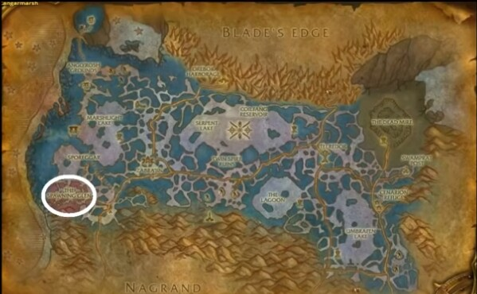
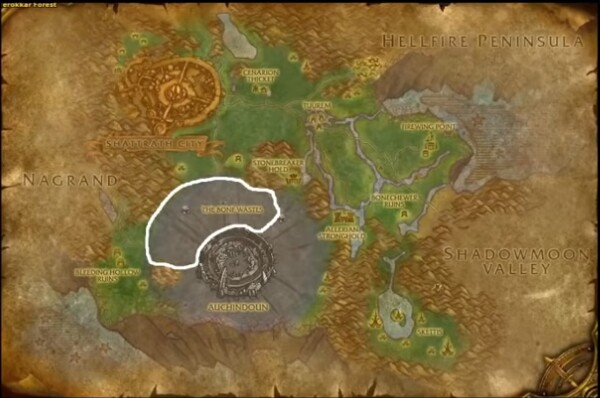
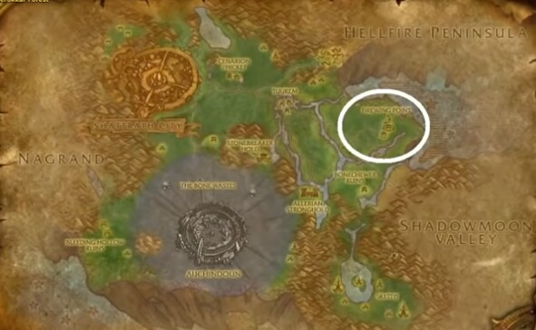
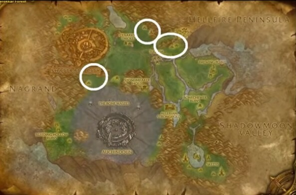
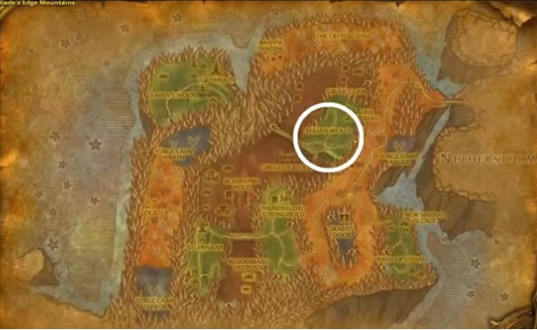
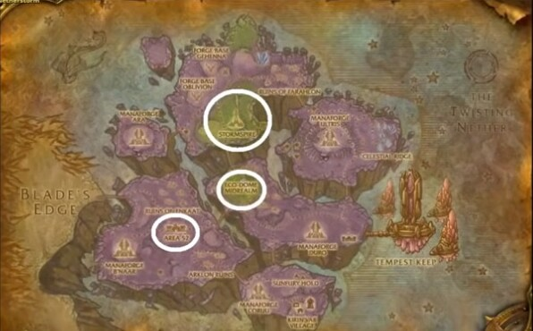
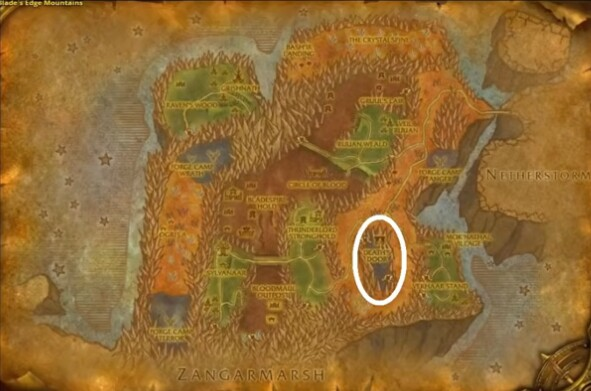
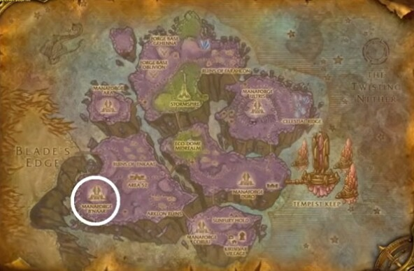

불타는 성전 60-70 평판 랩업
랩업은 다소 느리지만, 70랩이 되었을 때 주요 진영 평판이 매우 우호에 근접 또는 초과하는 게 목표입니다.
필드/던전 퀘스트는 확고까지 평판을 주기 때문에 평판 약우(5999) 또는 우호 이상에 완료하는 걸 추천합니다.
던전 퀘스트는 선행퀘도 있으니 참고바랍니다...
* 평판 작업하며 랩업하는건 전에 올린 글과 비슷한 부분이 많아 던전 관련은 간략하게만 표시하겠습니다.
* 아울러, 던전 평판 작업 시에는 모든 몹을 구석구석까지 싹 미세요..~
* 본 글의 퀘스트 이름은 다 링크가 되어 있으니 참고하세요~ (여기에 편집하기에는 양이 너무 많아서;;)
60-62 스랄마/명예의요새 우호 만들기
62-63 세나리온 원정대 우호 만들기
63-64 점술가/알도르/샤타르 우호 만들기
64-65 고난의 거리 우호 만들기
65-66 무역연합 우호 만들기
66-67 시간의 수호자 우호 만들기
66-67 고난의 거리 매우우호 만들기
67-68 세나리온(무역연합) 매우우호 만들기
68 카라잔 입장퀘스트 시작
68-69 점술가/알도르 매우우호 만들기
69-70 못 만든 매우우호 만들기
60-62
스랄마 / 명예의 요새 평판 올리기
얼라는 명의의 요새 / 호드는 스랄마에 귀환석 박기
[피의 용광로]
평판 판당 750
스랄마/명예의 요새 약우[5999] : 12판
[지옥불 성루]
평판 판당 575
스랄마/명예의요새 약우 5999일 때 퀘스트 완료를 위해 1번 돌기
약우(5999)가 되면 [지옥불 성루]와 [피의 용광로] 퀘스트
던전 퀘스트를 완료했다면 지옥불 반도 필드 퀘스트를 수행합니다.
(단, 세나리온 전초기지 퀘는 아직 하지 마세요)
그럼 대략 10,685 평판을 얻습니다.
던전 돌기 : 평판 9000
필드 퀘스트 : 평판 10,685
던전 퀘스트 : 평판 1,300
총 평판 : 스랄마/명예의요새 우호 [10,685 / 12,000]
69랩 이후에 으스러진 손의 전당(일반)을 돌면 평판 1,604를 얻으며 매우우호가 되요~
62-63
세나리온 원정대 평판 올리기
장가르 습지대로 가기전에
샤트라스를 방문하고 점술가/알도르 선택 퀘스트를 진행
** 퀘스트 애드온을 사용하시면 자동수락되지 않게 조심하세요!!
(자동 수락 시 점술가 길드 선택됨)
점술가나 알도르를 선택한 후 다른 퀘스트들은 일단 뒤로 하고 장가르 습지대로 이동!
세나리온 원정대 평판 올리기
- 평판을 올리는 방법은 크게 2가지이니 선택하시면 됩니다~ (던전 / 필드)
- 필드/던전 퀘스트는 우호 이상부터 진행..
선택 1) 던전 돌기
[강제 노역소]
평판 판당 915
세나리온 원정대 약우[5999] : 10판
[지하 수렁]
평판 판당 1040
세나리온 원정대 약우[5999] : 9판
추가로 지하 수렁에서는 [핏빛 불상화]를 부가적으로 얻음
[핏빛 불상화] 5개 = 스포어가르 평판 750 [약우-확고까지]
[핏빛 불상화] 260개 = 스포어가르 평판 확고
선택 2) 사냥하며 평판반납템 모으기
장가르 습지대 서쪽 부화의 골짜기로 갑니다.

수령군주와 포자거인 처치
[정체 불명의 식물 기관] 10개 = 세나라온 원정대 [250 / 우호 0]
[정체 불명의 식물 기관] 360개 = 세나리온 원정대 [우호 0]
[완전히 자란 포자 주머니] 10개 = 스포어가르 평판 [250 / 약우 0]
[수렁군주 덩굴손] 6개 = 스포어가르 평판 [250 / 약우 5999]
정체 불명의 식물 기관 반납 시 [확인된 식물 꾸러미]를 받습니다.
꾸러미에서 낮은 확률로 [미분류된 식물종]이 나옵니다.
[미분류된 식물종] 1개 = 세나리온 원정대 [500 / 확고까지]
* 미분류된 식물종은 약우 5999 이상에 반납
3) 평판 우호 이상
던전 퀘스트 (강제노역소 / 지하수렁)
[강제노역소 / 지하 수렁]
[지하 수렁]
: 스포어가르 평판만 올려줌 (선택은 자유..)
세나리온 원정대와 관련된 필드 퀘스트 진행
* 장가르 습지대 세나리온 피난처
* 지옥불 반도 세나리온 전초기지 (선행퀘 세나리온 피난처)
* 테로카르 초입 (선행퀘 세나리온 피난처)
이렇게 다하면
던전돌기/정체불명의 식물기관 : 평판 9000
미분류된 식물종 : 평판 3000~4000
필드/던전 퀘스트 : 평판 9,565
총 평판 : 세나리온 원정대 매우 우호 [565 / 21,000]
63-64
점술가/알도르 평판 올리기
알도르 사제회라면 테로카르 아래 지역을 가서 오크들 처치
[킬제덴의 징표] 1개 = 알도르 평판 [25 / 약우 5999]
약우5999까지 드레나이는 100개 / 블엘은 340개 / 그외는 220개 필요

점술가 길드라면 테로카르 아래 지역에 가서 블엘 처치
[불꽃날개 인장] 1개 = 점술가 평판 [25 / 약우 5999]
약우5999까지 드레나이는 340개 / 블엘은 100개 / 그외는 220개 필요

이렇게 돌고 나면
임원되기 퀘스트 : 평판 3,000
반납 퀘스트 : 평판 5,500
총 평판 : 점술가/알도르 약우 [5999/6000]
64-65
고난의 거리 평판 올리기
- 평판을 올리는 방법은 크게 2가지이니 선택하시면 됩니다~ (던전 / 필드)
- 필드/던전 퀘스트는 우호 이상부터 진행..
선택 1) 던전 돌기
[아카나이 납골당]
평판 판당 700
고난의 거리 약우[5999] = 13판
퀘스트는 2개이지만, 하지 않는게 낫습니다.
선택 2) 사냥하며 평판반납템 모으기
테로카르 숲 아래 지역 3곳 중 선택하여 아라코아 처치
[아라코아 깃털] 30개 = 고난의 거리 평판 [250 / 약우 5999]
[아라코아 깃털] 90개 = 아카나이 납골당 1판 도는 평판 나옴
[아라코아 깃털] 1,080개 = 고난의 거리 평판 [약우 5999]

3) 필드 퀘스트 하기
* 샤트라스 고난의 거리 퀘스트
이렇게 다하면
납골당/깃털 = 평판 9000
고난의 거리 퀘 = 평판 5,950
총합 : 고난의 거리 평판 우호 [5,950 / 12000]
잠시 접어 둡시다~
[마나 무덤]
평판 판당 990
무역 연합 약우[5999] = 10판
던전 퀘스트 (완료는 약우 5999 이상일 때)
약우 5999 이상에 던전퀘스트를 완료하면 나그란드로 이동
나그란드 에어리스 착륙지 퀘스트 진행
이렇게 다하면
마나무덤 = 평판 9000
던전 퀘 = 평판 1,350
착륙지 퀘 = 2,010
총합 : 무역 연합 우호 [3,360 / 12000]
잠시 접어둡니다..
66랩 만들기
아직 66랩이 안되었다면 아래를 진행하세요~
- 무역연합 에어리스 착륙지 퀘스트 모두 완료
- 목표 : 나그란드 오우거 잡기
* [흑요석 전투 목걸이] 10개 = 무역연합 평판 [250 / 약우-확고]
* [오슈군 결정 가루] 10개 = 할라아 연구 주화 (경험치도 매번 줌)
* 오우거 처치 시 쿠레나이/마그다르 평판 오름
- 알도르 평판이 모자르면 킬소로우 요새의 오크 처치 징표 획득
66랩이 될 때까지.. 파고 파고.. 또 파고.. 파고.. ~
66-(66)67
시간의 수호자 평판 올리기
타나리스 시간의 동굴로 이동합니다.
시간의 동굴 입구부터 안도르무와 대화하여 퀘스트를 바로 진행합니다.
시작 퀘스트
[옛 힐스브래드]
평판 판당 1,150 (호위 전 타렌밀까지 밀고 시작)
시간의 수호자 우호 = 3판
(반복은 추천하지 않지만 하셔도 됨)
옛 힐스브래드 던전
여기까지 하면 퀘스트로만 평판 약 6,000 가량 얻음
검은늪을 바로 가셔도 되고, 일단 보류하셔도 됩니다.
(아래 방법은 그냥 진행 시, 추천은 옛힐스까지만 마치는 것)
[검은늪]
평판 판당 1,110
시간의 수호자 매우[0] = 11판
쫄/보스랩 = 70~72랩
검은늪 던전검은늪 퀘 완료하면 평판 약 9,000 가량 얻음
이렇게 한다면
옛 힐스(x3) + 퀘스트 = 평판 9000
검은늪(x11) + 퀘스트 = 평판 12,210
총합 : 시간의 수호자 평판 매우 [210 / 21000]
66-67
고난의 거리 매우우호 만들기
아킨둔 세데크 전당으로 향합니다.
[세데크 전당]
평판 판당 1,035
고난의 거리 평판 매우 [0] = 6판
최종보스 뒤 상자에 어둠의 미궁 열쇠
세데크 전당 퀘스트
기존 올린 고난의 거리 평판 우호 14,950
전당 6번 = 6,210 평판
총합: 고난의 거리 평판 매우우호 [160 / 21,000]
67랩이 안되었다면 조금 더 돌아서 67랩을 만드세요..
67-68
세나리온과 무역연합 평판 올리기
먼저 칼날 산맥 루안 숲으로 이동
루안숲에서 받을 수 있는 세나리온 원정대 퀘를 모두 합니다.
경험치도 쌓으며 원정대 퀘를 하면 매우우호 - 확고 근처까지 도달 가능

진행하면 황천의 폭풍으로 가라고 합니다.
아래 3지역의 세나리온 원정대 / 무역연합 퀘를 진행합니다.
아직 마나무덤 퀘스트 완료를 안 했다면 지금 하셔도 됩니다..

다 진행해도 68랩이 안되었다면
- 시간의 동굴로 돌아가 검은늪 평판 돌기
- 나그란드 오우거 사냥
68랩이 되면 대략 평판은 담과 같을 것입니다. (차이는 있을 수 있음)
세나리온 원정대 평판 매우우호 [5,635 / 21,000]
무역연합 평판 우호 [9,330 / 12,000]
68랩
카라잔 입장 퀘스트 시작하기
죽음의 고개 카라잔 입구로 가서 카라잔 입장퀘스트를 시작합니다.
조각 퀘까지 받습니다.
불성 입장퀘스트 애드온를 받는 것을 추천합니다.
68-70
점술가/알도르 평판 올리기
남은 매우우호 평판 올리기
퀘스트 진행
알도르 : 나그란드, 어둠골 골짜기, 황천의 폭풍 진행
점술가 : 어둠골 골짜기, 황천의 폭풍 진행
반납템 모으기
알도르 사제회는 칼날산맥으로 이동합니다.
[살게라스의 징표] 10개 = 알도르 평판 [250 / 확고까지]
[살게라스의 징표] 480개 = 알도르 평판 매우우호
[지옥의 무기] 1개 = 알도르 평판 [350 / 확고까지]
[지옥의 무기] 35개 = 알도르 평판 매우우호

점술가 길드는 황천의 폭풍으로 이동합니다.
[성난태양 인장] 10개 = 점술가 평판 [250 / 확고까지]
[성난태양 인장] 480개 = 점술가 평판 매우우호
[비전 고서] 1개 = 점술가 평판 [350 / 확고까지]
[비전 고서] 35개 = 점술가 평판 매우우호

점술가/알도르 매우 우호까지 올렸다면 이제는 선택을 하셔서 올리시면 됩니다.
이 글의 목적은 매우우호에 근접 또는 넘어서기라.. 모자른 평판 작업을 하시면 됩니다.
- 시간의 수호자 : 검은늪 (판당 1110)
- 고난의거리 : 어둠의미궁(판당 2010), 세데크전당(판당 1035)
- 스랄/명예 : 으스러진 손의 전당(판당 1604)
- 세나리온원정대 : 증기저장고(판당 1790)
- 무역연합 : 나그란드 오우거 죽이기 (랩업측면 비추천)
- 샤타르(70랩) : 신록의정원(판당 2000), 메카니르(판당 1620), 알카트라즈(판당 1800)
* 드루이드는 68랩부터 진입 가능
- 알도르/점술가 평판반납템
알도르 : 어둠의 미궁
점술가 : 메카니르
이렇게 다 하게되면
스랄마/명예의 요새 :: 매우 우호 이상
고난의 거리 :: 매우 우호 이상
세나리온 원정대 :: 매우 우호 이상
시간의 수호자 :: 매우 우호 이상
점술가/알도르 :: 매우 우호 이상
무역연합 :: 우호 이상
샤타르 :: 우호 이상
70랩이 되면 영던 열쇠, 평판장비 등을 쉽게 얻어 만랩 컨텐츠 진행이 수월해질 듯~
끝..
| 평판 | 수치 |
| 매우 적대 | 0~36000 / 36000 |
| 적대 | 0~2999 / 3000 |
| 약간 적대 | 0~2999 / 3000 |
| 중립 | 0~2999 / 3000 |
| 약간 우호 | 0~5999 / 6000 |
| 우호 | 0~11999 / 12000 |
| 매우 우호 | 0~20999 / 21000 |
| 확고 | 0~1000 / 1000 |
주요 진영과 평판 작업
| 진영 | 관련 던전/반납템/일퀘 |
스랄마(호드)
명예의 요새(얼라) | 지옥불 성루 [일반 - 약우 5999]
피의 용광로 [일반 - 약우 5999]
으스러진 손의 전당 [일반 - 매우 20999]
영던 확고까지
지옥불반도 점령일퀘 [확고까지] |
| 세나리온 원정대 | 강제노역소 [일반 - 약우 5999]
지하 수렁 [일반 - 약우 5999]
증기의 저장고 [일반 - 매우 20999]
영던 확고까지
정체 불명의 식물 기관 [우호 0]
미분류된 식물종 [확고까지] |
| 고난의 거리 | 아카나이 납골당 [일반 - 약우 5999]
세데크 전당 [일반 - 매우 20999]
어둠의 미궁 [일반 - 매우 20999]
영던 확고까지
아라코아 깃털 [약우 6000] |
| 시간의 수호자 | 옛 힐스 [일반 - 매우 20999]
검은늪 [일반 - 매우 20999]
영던 확고까지 |
| 샤티르 | 메카니르 [일반 - 매우 20999]
신록의 정원 [일반 - 매우 20999]
알카트라즈 [일반 - 매우 20999]
영던 확고까지
점술가/알도르 평판 획득 시 [약우 5999] |
| 무역 연합 | 마나 무덤 [일반 - 약우 5999]
영던 확고까지
오슈군 결정 조각 [10개=250 / 약우 5999]
상아 어금니 한쌍 [3개=250 / 약우 5999]
흑요석 전투 목걸이 [10개=250 / 확고까지]
작시스 휘장 [10개=250 / 확고까지] |
| 알도르 사제회 | 던전 없음
킬제덴의 징표 [10개=250 / 약우 5999]
중립-우호 [블엘 340개, 드레100개, 그외 220개]
살게라스의 징표 [1개=25 / 확고까지]
우호-확고 [1320개]
지옥의 무기 [1개=350 / 확고까지]
우호-확고 [95개] |
| 점술가 길드 | 던전 없음
불꽃날개 인장 [10개=250 / 약우 5999]
중립-우호 [블엘 100개, 드레340개, 그외 220개]
성난태양 인장 [1개=25 / 확고까지]
우호-확고 [1320개]
비전 고서 [1개=350 / 확고까지]
우호-확고 [95개] |
점술가 ▶ 알도르
바꿀 때 | 던전 없음
공포의 송곳니 독주머니 [10개=250 / 중립 0]
매적-중립 : 1680개
적대-중립 : 240개
약적-중립 : 120개 |
알도르 ▶ 점술가
바꿀 때 | 던전 없음
안개비늘 바실리스크 눈 [10개=250 / 중립 0]
매적-중립 : 1680개
적대-중립 : 240개
약적-중립 : 120개 |
* 점술가 평판이 오르면 알도르 평판은 오른 평판+10% 더 깎입니다. * 알도르 평판이 오르면 점술가 평판은 오른 평판+10% 더 깎입니다.